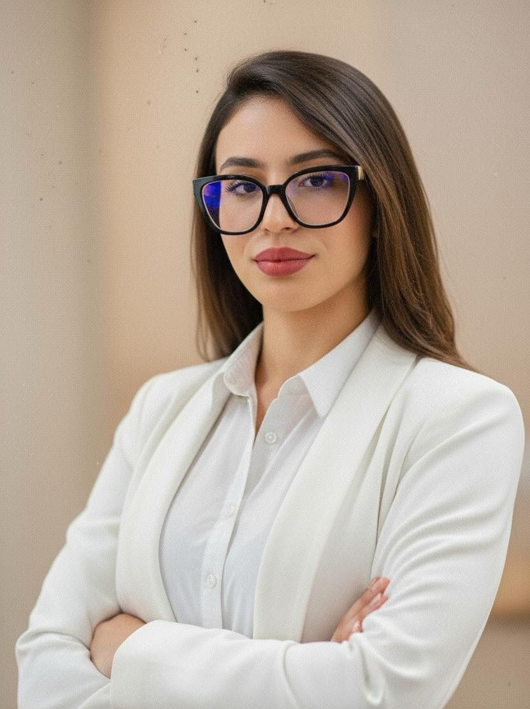

Nadia Chakroun
Profil : Étudiante en deuxième année de licence d’informatique, créative et curieuse, passionnée par l’art et la conception. Je cherche à combiner ma formation en informatique avec ma passion pour la création : design numérique, modélisation ou tout autre domaine mêlant technologie et imagination.
🎓 Formations Académiques
- 2025-2026 — L2 Informatique, Université d’Évry Paris-Saclay
• SGBD | Théorie des langages | Développement web | Anglais | Probabilités | Programmation fonctionnelle | Algèbre & Arithmétique
- 2024-2025 — L1 Informatique, Université d’Évry Paris-Saclay
• Analyse réelle | Langage mathématique | Informatique générale | Programmation Java | Algèbre linéaire & géométrie | Électronique numérique | Développement web | Architecture & programmation
- 2022-2023 — Baccalauréat Informatique, Sayada (Tunisie)
• Python | Physique | Analyse | Probabilité | Arithmétique | HTML | CSS | JavaScript | PHP | SGBD | Éducation plastique | Philosophie | Anglais | Français | Arabe
💼 Expériences Professionnelles
- Animatrice — Club artistique pour enfants (Sayada, Tunisie)
• Encadrement d’un groupe d’enfants (6–12 ans)
• Initiation au dessin, à la modélisation et au coloriage en argile
• Développement de la créativité, de la patience et du travail en groupe